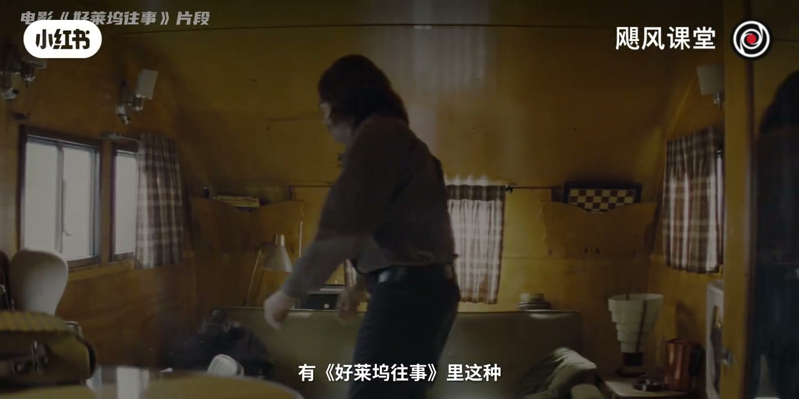
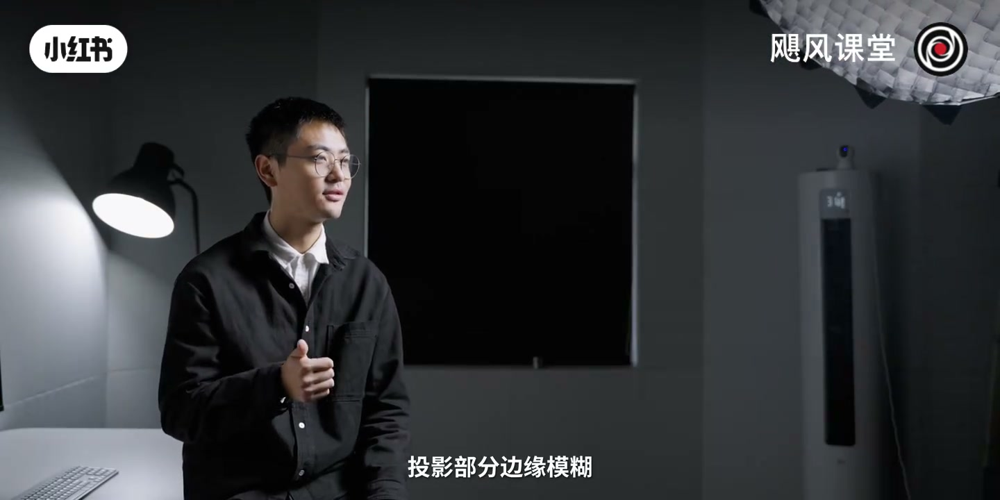
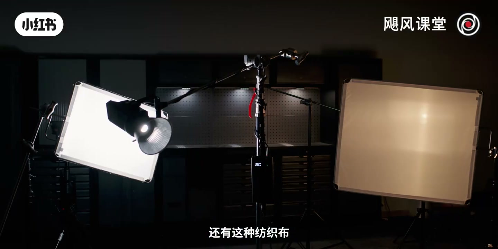
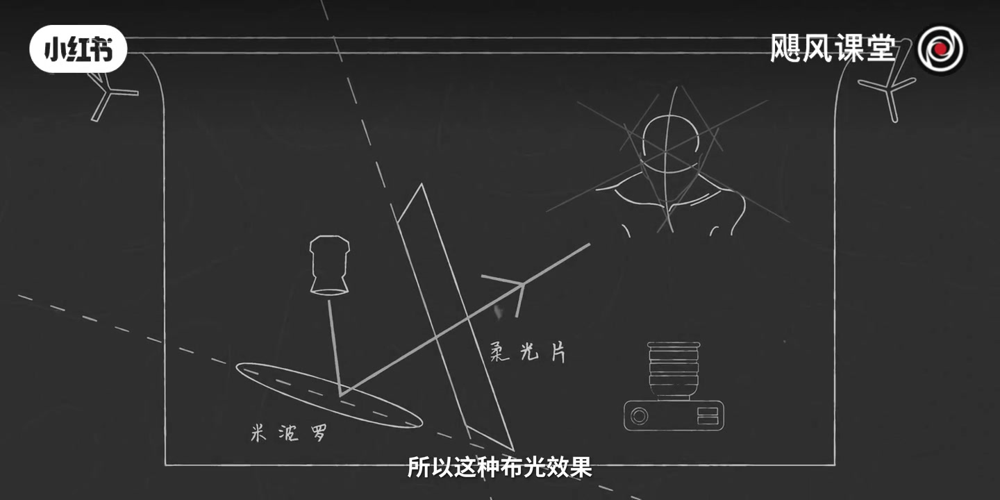

内容要点
「【灯光教程一】摄影灯和你家里的灯有啥区别」教程要点：这是一盏灯 它的功率是800瓦 → 而它现在发射出的光是映光 → 打到我的脸上是这样的 → 丑陋又无趣；详见正文。
知识结构
这是一盏灯 它的功率是800瓦
柔纱尺寸越大
那我们自然就可以看到
- 这是一盏灯 它的功率是800瓦
- 而它现在发射出的光是映光
- 打到我的脸上是这样的
- 丑陋又无趣
- 而同样的光经过一番调整之后
这是一盏灯 它的功率是800瓦
00:00–03:10这是一盏灯 它的功率是800瓦
这是一盏灯 它的功率是800瓦；而它现在发射出的光是映光；打到我的脸上是这样的；丑陋又无趣；而同样的光经过一番调整之后；你可以实现这样的效果；或是这样的效果；但发光的灯本身从来都没有变过；变的只不过是你的曝光方案而已；提起灯光 你会最先想到哪部电影；或者说你最喜欢哪部电影；在电影里你可以看到各式各样的光线；有教父这样神秘深邃的影光；有好莱坞往事里这种；地灯和阳光结合的混合光；有巴黎灵灯里的烛光；甚至荒野猎人里的完全的自然光；就有光才有影；光线是影响画面 渲染氛围；推动叙事非常重要的一部分；而它本身是无比公平的；这盏灯和这盏灯 价格相差几十倍；但是它们都受到物理法则的约束；贵的灯能够帮你提升效率；但它自己并不能帮助你讲出更好的故事；所以当你掌握了灯光语言之后；即便是廉价的灯光；你也能用它给人留下深刻的印象；所以好各位好 我是Tim；欢迎收看本期影视剧风；今天我们来和光作游戏；按照质感的不同；我们可以简略的把光线分成硬光和柔光；硬光也就是直射光；当它照射到人脸上的时候；鼻子这边还有后面的墙上；都会出现这种边缘非常清晰的投影；看上去立体感非常强；另一种就是柔光 也就是散射光；把它打下来可以看到人脸上的受光；非常均匀柔和；投影部分边缘模糊；不会有一个明显的明暗过渡；一般情况下 我们都会使用柔光；来打亮人脸；有一点是需要明确的；硬光是可以转化成柔光的；你可以看到这是一张高功率的LED灯；在灯前面有一个菲尼尔聚光镜；前面这层玻璃是同心圆；凹槽都是锯齿形的；它能够把光线聚集起来；产生这种非常清晰的硬光勾边的效果；如果要让这样一束硬光；变成这种模糊柔和的感觉；一种方法就是靠慢反射；把灯光从人脸上移开；打到反光板上；灯光通过反光板再返回到人脸上；就可以看到灯光变得更加柔和了一些；这里我们用的反光板是比较常见的米波罗；说人话就是泡沫板；就影视行业经常会有这种鬼畜的名字；就不要被它吓到；光线打在这种表面不平整的塑料泡沫板上；会产生慢反射的效果；发光面积变大了；光线也就分散了；自然也就柔了；而另一种方法想把光线打柔；是靠慢透射；就在灯光前面糊上一层半透明的慢透射材料；有这种可以直接固定在灯前面的柔光；还有这种纺织布；柔纱 硫酸纸等等；这种柔光片；这些材料表面看上去很光滑；但实际上是凹凸不平；有纹理的；所以光打上去的时候就会散开；光线会无规则的往不同的方向走；相当于过滤掉了一些光；等到它打到人身上；这些光已经被提纯过了


03:09–06:08柔纱尺寸越大
柔纱尺寸越大；光的范围扩大也会越多；你可以看到最终的光线；最终的光线就会显得越发的柔和均匀；但是如果你觉得；慢反射还有慢透射的柔光效果；还是不够；不够有这种电影感；不够柔不够好看；那你甚至可以把这两种方法混合到一起来使用；具体操作就像这样；机位在人的正前方；把灯从45度角的位置；斜打在米波罗上；米波罗反射的光；再透过柔光片照射到人的脸上；你可以来看一下对比的效果；单层的柔光还有这种双重的柔光；就你把灯打开；放上米波罗加上柔光片；我们可以很明显的感受到；人脸上的阴影会变得更加柔和一些；那米波罗和柔光片之间；就有个夹角；看上去就像是一本翻开的书；所以这种曝光效果也是被称之为；舒适曝光；是一种非常美观的柔光布置方案；你可以尝试一下；许多电视广告或是电影都会用到这个技巧；如果你手边没有上面提到一些专业的；灯光配件；其实也不是没有一些骚办法；像这些床单 浴帘 伞；灯罩这些；你家里或许又有 网上几十块钱也能买到；在家里面直接拿0元够的话；最多就爱一顿打；所以问题不是很大；使用的时候你只要像这样确认好距离还有高度；把他们固定在这种落地衣架上；把灯打开你就可以看到；他们同样能够有很不错的柔光效果；特别要提一下这个紫灯笼罩；只要几块钱你在网上都能买到；在里面放上这种小灯；就可以扩大它的发光面积；产生非常非常柔和的光线效果；性价比超级高；电影里我们也经常会使用到这种类似的柔光球；特别是在人物对话；还有走动的时候；灯光师可以挑着它 跟着演员一起来移动；比起一般的灯；这种球形的灯罩会非常灵变；也非常适合移动；总结来说 光的软硬程度；主要取决于光源面积的大小；为了扩大光源的范围；你可以选择去用配件；去扩散光源 也可以拉近光；还有和被射物体的距离；逻辑上 灯离人越近；被射物体受到的灯光；就会越发散；面积越大 阴影也会越柔；如果你想打硬光；那就把灯光调高一些 离远一些；光线也就会越平行；也就是越聚笼 阴影也就会越硬；那我们看到电影里的场景非常大；人物又很多；如果要给人脸打柔光；肯定不能像上面这样布光；灯光就会穿帮 而且工程量会非常好；但其实布光的原理；永远是一样的；打光的时候 这些灯光师；会希望尽可能让灯靠近人；并且扩大着光源的面积；比如像这样一个快速移动的长镜头；就是在提前整个天花板的位置上；都布满了柔光灯；光源面积大到把所有人都给包裹进去


06:07–09:04那我们自然就可以看到
那我们自然就可以看到；所有人脸上都会有这种；柔和又吸引的光；那另外需要注意的一点就是；太阳光 太阳确实是一个巨大的光源；理论上太阳光应该非常柔和；但同时太阳离地球非常非常远；有1.5亿公里；那我们站在地球上看太阳；只有指甲盖大小；所以我们会把太阳当成一个很完美的点光源；直射的太阳光；如果没有云层遮挡的话；那打下来就是一个非常硬的映光；我们一般拍摄就会尽量避开这种阵舞；选择在下午3点到5点；光比较弱的晴天；或是比较明亮的阴天；来出外景；这样整体的光线都是比较柔和；比较好看一些的；映光和柔光其实不存在好坏；只是看你怎么用；所以经常会出现混合使用的情况；那以我们节目中的一些拍摄场景为例；用的是基础的三点布光；我们看到这个场景里有三种灯光；侧前方的主光；另一侧的辅光；还有背后的轮廓光；主光一般放在人侧前方；约30到45度角的位置；是整个画面的主要光源；辅光在另一侧；负责填充脸上的阴影；那我们使用的主光和辅光都是柔光；这样人脸看上去会比较细腻自然一些；有朋友经常问我说我没加美颜；其实真的没有加过任何美颜；就是这样；所以得拍得柔；柔一点；毕竟talking最重要的就是营造一种和观众对话的感觉；所以线条灵力的映光；就会产生那种距离感；还有这种阴森感；更适合在一些电影的场景里面来使用；那后面这盏光；这个轮廓光用的倒是映光；或者说叫做发光；会在肩膀还有头发边缘上；产生一层细窄的亮光；那它的目的是把人从背景中给分离出来；还原出空间感；但是放在人的侧后方；而且要高于摄影机的位置；才会有更好的效果；那讲了这么多其实不光没有一个唯一的准则；我希望各位能学到一些；我们这些经验；其实这就是分享经验；不光更多的看似实践出真知；只有你真正的上手；你才会知道什么亮度什么角度；什么质感是你所需要的；因为每个人的房间和空间都不一样；所以你需要尽量去玩一玩；去试一试；不只改造计划；把这些理论用到实战；如果你有兴趣看的话一定要记得关注；就不光这些还有很多内容可以讲；明暗反差 灯具；色温 造型光；景光 还有光效等等这些；那也欢迎各位在评论区；弹幕里留言；讲讲你感兴趣的东西；我们会进来在下一次灯光节目里面来介绍；那谢谢各位；我们下次再见；请不吝点赞 订阅 转发 打赏支持明镜与点点栏目
口述/画面要点（40段）
结合 Whisper medium 与画面大字整理；专有名词已校对。
这是一盏灯 它的功率是800瓦
而它现在发射出的光是映光
打到我的脸上是这样的
丑陋又无趣
而同样的光经过一番调整之后
你可以实现这样的效果
或是这样的效果
但发光的灯本身从来都没有变过
变的只不过是你的曝光方案而已
提起灯光 你会最先想到哪部电影
或者说你最喜欢哪部电影
在电影里你可以看到各式各样的光线
有教父这样神秘深邃的影光
有好莱坞往事里这种
地灯和阳光结合的混合光
有巴黎灵灯里的烛光
甚至荒野猎人里的完全的自然光
就有光才有影
光线是影响画面 渲染氛围
推动叙事非常重要的一部分
而它本身是无比公平的
这盏灯和这盏灯 价格相差几十倍
但是它们都受到物理法则的约束
贵的灯能够帮你提升效率
但它自己并不能帮助你讲出更好的故事
所以当你掌握了灯光语言之后
即便是廉价的灯光
你也能用它给人留下深刻的印象
所以好各位好 我是Tim
欢迎收看本期影视剧风
今天我们来和光作游戏
按照质感的不同
我们可以简略的把光线分成硬光和柔光
硬光也就是直射光
当它照射到人脸上的时候
鼻子这边还有后面的墙上
都会出现这种边缘非常清晰的投影
看上去立体感非常强
另一种就是柔光 也就是散射光
把它打下来可以看到人脸上的受光